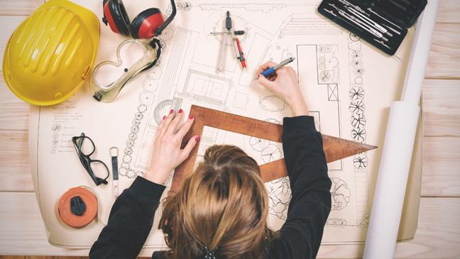
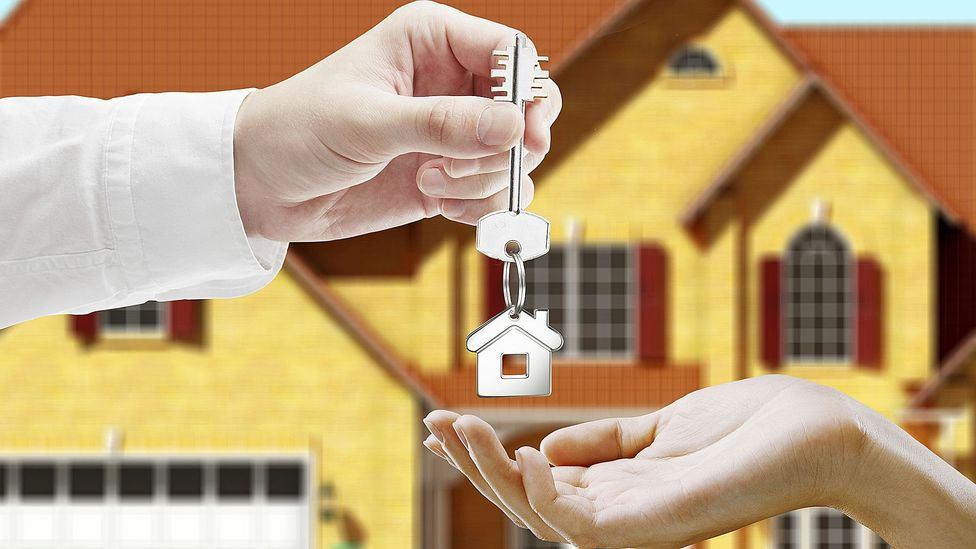
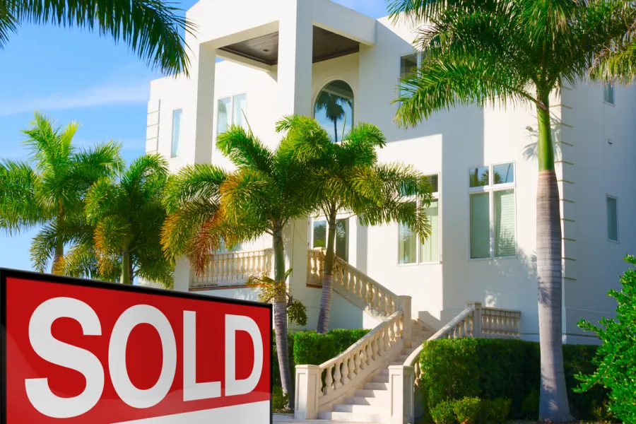

Our Story
In the Beginning
LuxLivingSpaces.com was born out of a vision to transform ordinary living spaces into extraordinary havens of luxury and elegance. Our journey began two decades ago when a group of passionate interior designers and architects decided to pool their talents and expertise to create something truly exceptional.


The First Project
Our first project was a modest apartment in the heart of the city. We turned a blank canvas into a masterpiece of design, captivating everyone who entered with our attention to detail and commitment to quality. It was here that the seeds of LuxLivingSpaces.com were sown, and we knew we were onto something special.
Over the next ten years, we worked tirelessly, designing and crafting beautiful interiors for homes, offices, and businesses. Our dedication to creating spaces that exude luxury and comfort became our hallmark. Our reputation for excellence spread, and clients from all over the world sought our services.
Our Mission
Creating Dreams, One Space at a Time
At LuxLivingSpaces.com, our mission is simple yet profound: to turn your dreams into reality, one living space at a time. We believe that your home should be a reflection of your personality and lifestyle, a place where you can truly be yourself.
Exceeding Expectations
We are committed to exceeding your expectations in every project we undertake. Whether you seek modern minimalism, timeless tradition, colonial charm, or craftsman craftsmanship, our team of experts is here to deliver unparalleled design and quality.


Affordable Luxury
Luxury doesn't have to be unattainable. Our mission is to make luxury affordable for everyone. We work closely with our clients to provide cost-effective solutions without compromising on the quality and aesthetics that define LuxLivingSpaces.com.
Your Dream, Our Passion
Every project we undertake is a testament to our passion for design and dedication to our clients. We take your dreams and infuse them with our expertise, creating spaces that inspire and comfort. Your satisfaction is our ultimate goal, and your dream home is just a project away.
Our Founder's Vision
Turning Visions into Reality
LuxLivingSpaces.com was founded by Jane Doe, a visionary entrepreneur with a deep passion for transforming living spaces. Her journey began with a simple yet profound mission: to turn dreams into reality, one living space at a time. Jane believed that everyone deserved a home that reflects their personality and lifestyle, a place where they can truly be themselves.
A Commitment to Excellence
Jane Doe's commitment to excellence was the cornerstone of our company. She understood that whether it's modern minimalism, timeless tradition, colonial charm, or craftsman craftsmanship, clients deserve design and quality that exceed their expectations. She assembled a team of experts who shared this commitment and passion.

Affordable Luxury for All
Jane was determined to make luxury accessible to everyone. She worked closely with clients to provide cost-effective solutions without compromising on quality and aesthetics. Her vision was clear: luxury doesn't have to be unattainable, and she made it a reality through LuxLivingSpaces.com.
A Dream Home for Every Client
Every project undertaken by Jane and her team was a testament to their passion for design and dedication to their clients. They took the dreams of their clients and infused them with expertise, creating spaces that inspire and comfort. Customer satisfaction was the ultimate goal, and Jane believed that your dream home was just a project away with LuxLivingSpaces.com.